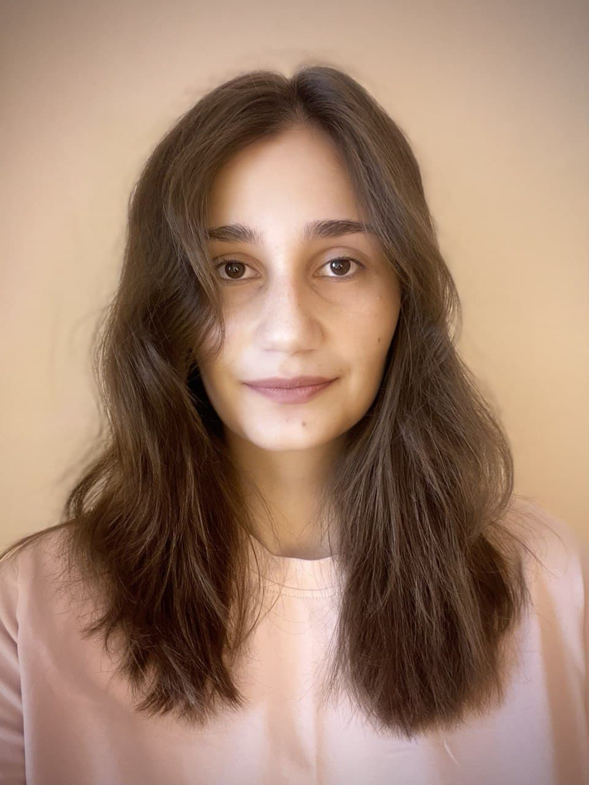

Ekaterina Melianova
Contact
ekaterina-melianova(at)bristol.uk.ac@egmelianova
Ekaterina-Melianova
I am a PhD student in Advanced Quantitative Methods at the University of Bristol. My research interests refer to the application of statistical techniques to various questions in social sciences, particularly social epidemiology and education. In my PhD work, I study the effect of different government policies on health outcomes in the UK.
Earlier I worked as a consultant at the World Bank where I leveraged advanced data analytic instruments in projects that helped formulate policy recommendations for the improvement of higher, secondary, and extracurricular education in Russia.
I enjoy participating in data analytic competitions. Together with Artem Volgin we took 2nd place (8,000$) in Kaggle ML & DS Survey competition and 1st place (10,000$) in DS4G - EIE competition organised by The Environmental Insights Explorer team at Google. Also, we became prize-winners in CDP - Unlocking Climate Solutions competition (25,000$) and COVID-19 Facebook challenge (30,000$) organised in partnership with Facebook Data For Good. Recently, we got a prize from another Kaggle ML & DS Survey competition (5,000$).
Programming languages and software: R, Python, Stata, SQL, SAS, SPSS, and some other tools for statistical modelling.
My CV contains more details about my education and work experience.
Recent publications and working papers
-
New Skills for New Century : Informing Regional Policy
Shmis, Tigran; Ustinova, Maria; Chugunov, Dmitry; Melianova, Ekaterina; Parandekar, Suhas D.; Kruske, Lucy
The World Bank, 2021Returns to Education in the Russian Federation: Some New Estimates
Harry Patrinos, Suhas Parandekar, Ekaterina Melianova, Artem Volgin
IZA Discussion Paper, 2020Returns to Education in the Russian Federation: Towards Evidence Based Decision Making with Fiscal and Private Returns to Education
Ekaterina Melianova, Suhas Parandekar, Artem Volgin
The World Bank, 2020Returns to Education in the Russian Federation : Variation Across Regions and Implications for Policy Development in Priority Regions
Ekaterina Melianova, Suhas Parandekar, Artem Volgin
The World Bank, 2020